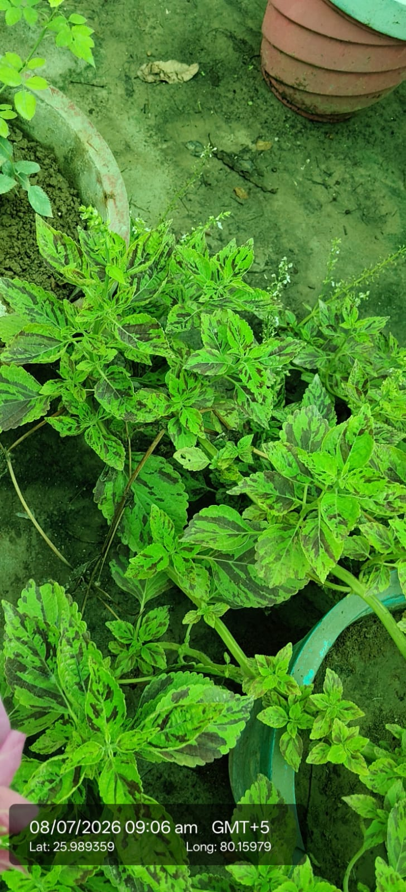

| Scientific name | Plectranthus scutellarioides |
|---|---|
| Family | Lamiaceae |
| Category | Herbs |
Habitat & Growing Conditions
- Native to Southeast Asia and Australia. Widely grown as ornamental across India
- Very common in UP including Kanpur area at your coordinates. Grown in pots, home gardens, and nurseries like in your photo
- Thrives in tropical to subtropical climate
- Needs well-drained soil and bright indirect light to partial shade. Too much direct sun fades leaf colors
- Grows 30-80 cm tall. Leaves are soft, broad, ovate with scalloped edges. This variety has bright green leaves with dark maroon/brown patches and veining, which matches your photo
Ecological & Economic Importance
- Ornamental: One of the most popular foliage plants. Grown for colorful leaves, not flowers. Over 200 varieties exist in green, red, yellow, pink, and purple combinations. Used for borders, pots, and indoor decor
- Medicinal: Some varieties used in traditional medicine for skin issues, digestion, and respiratory problems. Note: Coleus forskohlii is the main medicinal species. Consult a healthcare professional before any medicinal use
- Other uses: Easy to propagate from cuttings. Popular in nursery trade and landscaping
- Ecological: Grows fast and fills pots/borders quickly
Field Notes
- Synonym: Coleus blumei